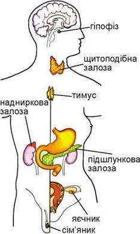

Ендокринна система людини: як працюють наші залози та їхні гормони
Ендокринна система — це потужний внутрішній механізм, який разом із нервовою та імунною системами керує всім нашим організмом. Замість нервових імпульсів для передачі регуляторних сигналів вона використовує спеціальні хімічні речовини — гормони. Ці речовини виділяються залозами прямо в кров і розносяться по всьому тілу, регулюючи обмін речовин, ріст, настрій та сон.
Коли система працює злагоджено, організм перебуває в стані балансу (гомеостазу). Якщо ж якась залоза дає збій, виникає або гіперфункція (виробляється занадто багато гормонів), або гіпофункція (гормонів катастрофічно не вистачає).
З чого складається ендокринна система та за що вона відповідає?

Мал. 1. Анатомічна структура ендокринної системи
Анатомічно систему можна розділити на три основні групи:
1. Головні ендокринні залози:
- Гіпофіз — «головний пульт керування» у мозку. Він виробляє тропні гормони (зокрема гормон росту та ТТГ), які буквально наказують іншим залозам, як і коли працювати.
- Щитоподібна залоза — виробляє гормони Т3, Т4. Вони є головними двигунами метаболізму: відповідають за енергію в клітинах, ріст тканин та теплообмін.
- Паращитоподібні залози — крихітні залози, що виробляють паратгормон. Він жорстко контролює рівень кальцію та фосфору в крові та кістках.
- Надниркові залози — фабрика гормонів стресу (кортизол, адреналін, норадреналін). Вони допомагають організму виживати в екстремальних ситуаціях, впливають на тиск і роботу серця.
- Епіфіз (шишкоподібна залоза) — виробляє мелатонін, який регулює наші біологічні ритми (цикли сну та неспання).
2. Органи з ендокринною тканиною:
- Підшлункова залоза — її особливі острівці Лангерганса виробляють інсулін та глюкагон, які регулюють рівень цукру в крові та забезпечують клітини енергією.
- Статеві залози (яєчники у жінок, яєчка у чоловіків) — виробляють статеві гормони, що відповідають за репродуктивне здоров’я, статеве дозрівання та розвиток організму.
3. Органи з поодинокими ендокринними клітинами:
Гормональні клітини також розсіяні в серці, легенях, нирках, плаценті, тимусі та шлунково-кишковому тракті. Вони допомагають регулювати процеси місцево — наприклад, травлення чи тонус судин.